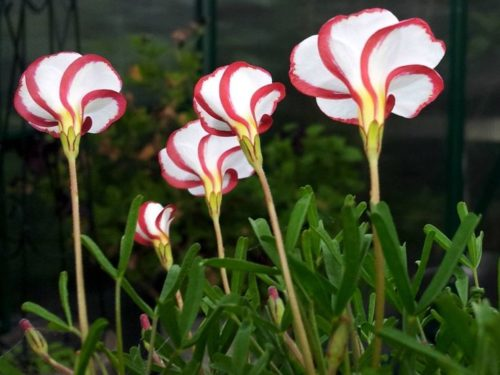
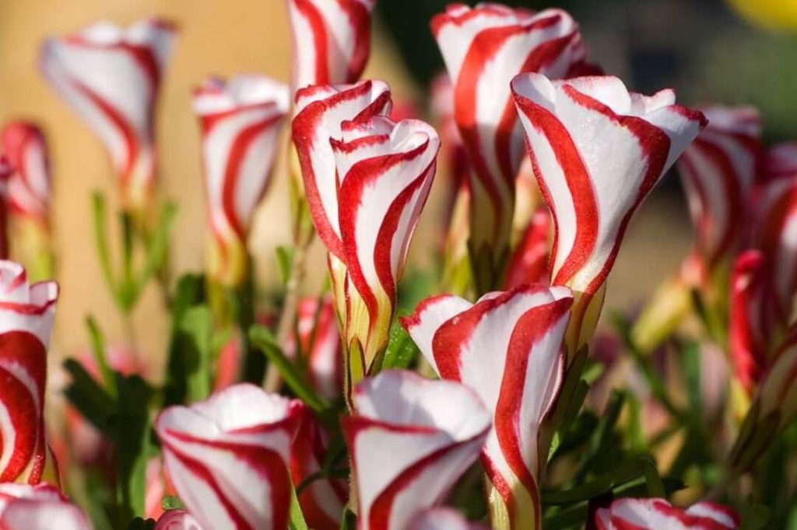
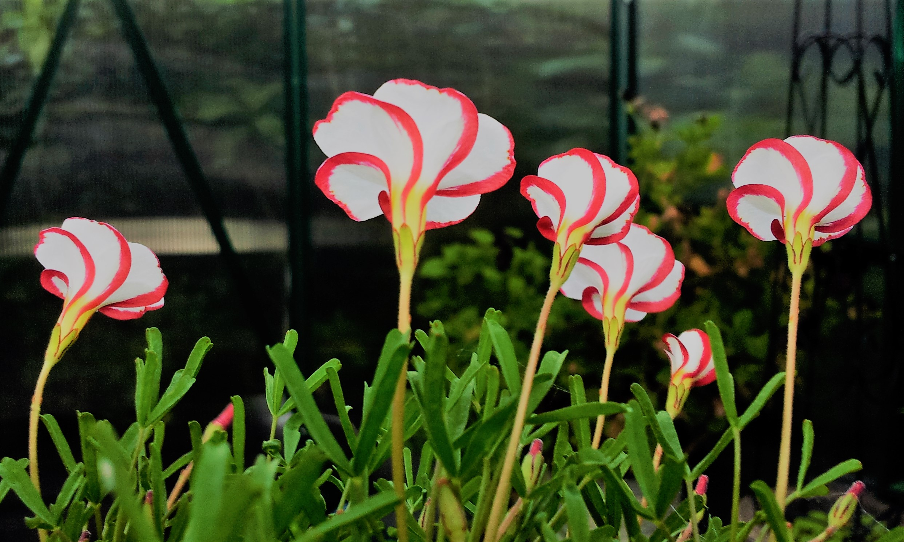
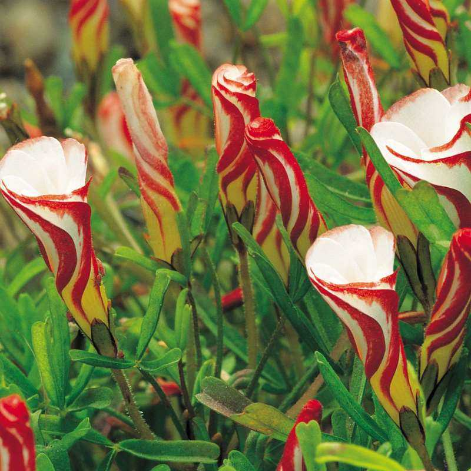
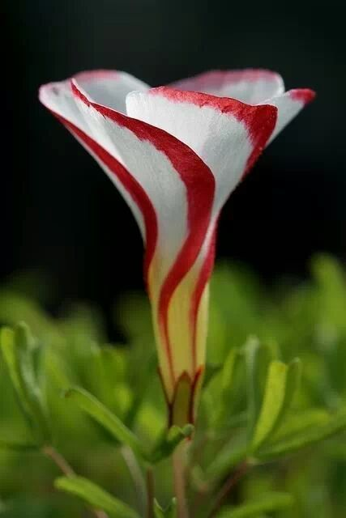

Esta flor tiene origen sudafricano y su nombre científico es “Oxalis Versicolor” que significa “cambio de color”. En inglés la han llamado coloquialmente “Candy Cane” haciendo alusión a que sus colores y su forma la hacen parecer a los clásicos bastones de azúcar blancos y rojos, tan comunes durante la época navideña
La Oxalis Versicolor es un sub-arbusto que crece a partir de pequeños bulbos con un follaje trifoliado que se mantiene aun cuando la planta no está en flor.
Su nombre significa cambio de color y se debe a lo particular de las flores, en forma de embudo, con rayas rojas y de 5 pétalos que gracias a la luz del sol cuando se abren se convierten en flores completamente blancas con un pequeño corazón amarillas ya que las rayas rojas están en la parte exterior de la flor.